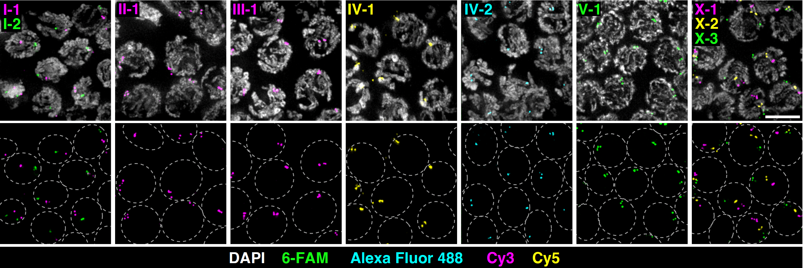

An automated Snakemake pipeline for designing locus-specific oligonucleotide FISH probes targeting tandem repeats in any genome assembly, based on Adilardi & Dernburg, G3 (2022).
Each probe is a single oligonucleotide that can be commercially synthesized and labeled, maximizing convenience and reproducibility. Probes yield reliable signals in different tissues and are compatible with immunolocalization of cellular proteins.
The pipeline takes a genome assembly (FASTA) and a configuration file, then runs six steps fully automatically, from repeat detection to an HTML report with probe sequences and quality metrics.
Note: predicted probes should be experimentally validated to confirm single-locus hybridization.
Results from two nematode species. The pipeline recovers all 13 C. elegans and all 10 P. pacificus loci validated in Adilardi & Dernburg (2022), and identifies many additional candidates in both species.
Example probes: Pristionchus pacificus (top probe per chromosome by repeat span)
| Chr | Sequence (5′→3′) | Span (kb) | Tm (°C) | GC% | In-locus hits | Verdict |
|---|---|---|---|---|---|---|
| I | CCTCGTGGAGTCCATTCGATCATTG | 40.1 | 38.8 | 52 | 517 | PASS |
| II | CAGAAACCTCAAGATCTTCGACGAA | 36.9 | 36.4 | 44 | 410 | PASS |
| III | CGTTGACATTGCACGATCGAATTCC | 40.5 | 38.6 | 48 | 1040 | PASS |
| IV | GTGCAAGTGCACTCGTTCACAGAGG | 38.9 | 41.6 | 56 | 239 | PASS |
| V | TGAGGCCCATGCAGATAACTATAGA | 22.8 | 36.6 | 44 | 219 | PASS |
| X | GTCGACGGCTGCGTCGACTGAAGAG | 29.3 | 44.4 | 64 | 734 | PASS |
Experimentally validated probes from the original publication

Clone the repository, create the conda environment, and run on the built-in test genome to verify the installation. Then point the pipeline at your own genome assembly.
For detailed installation instructions see SETUP_MACOS.md. The pipeline is configured via a single YAML file: genome path, species name, FISH resolution, and BLAST parameters.